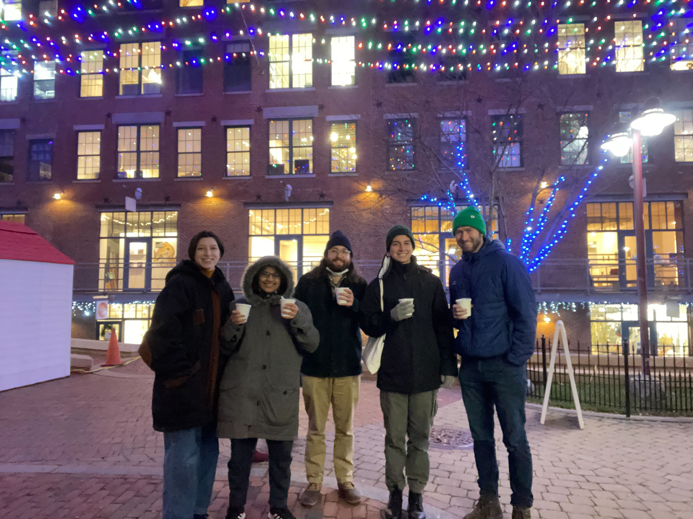

Thank you for visiting our research page. We are a new evolutionary computational biology research group at Tufts University.
Our research asks "when is evolution important for explaining species' persistence, and
why?" It's now clear that rapid climate change, habitat loss, disease spillover, and changing species interactions have driven
many species to very low population abundance or extinction. And it's also clear that species can sometimes adapt rapidly to changing conditions,
but we still know very little about the ecological, evolutionary, and genetic factors that facilitate or prohibit rapid adaptation.
We combine theoretical population genetic models, genomic data, and observational ecological data to try to predict when species will or will not
be able to adapt sufficiently rapidly to persist.
In addition to our research, we seek to enact positive change in our scientific and local communities, especially in terms of representation in
science. We aim to be an explicitly anti-racist lab, and we welcome scholars of all ancestries, genders, disability statuses, and sexualities.
The lab's anti-racism statement can be found here, and you can read more about our vision for DEI work in my application materials
here.
Tufts undergraduates are more than welcome to contact us about research opportunities. Please fill out this form and we will get back to you. For information about joining the lab, please visit the people page.
(Image: Jasper Ridge field site. photo credit: Reuben Brandt)
Lab News
- April 2022: Undergraduate Daphne Garcia will join the lab to study genomic vulnerability using model-based simulations. Daphne received a Tufts Summer Fellowship. Welcome Daphne!
- January 2022: New paper out in Trends in Parasitology, led by Emily Ebel. Dr. Ebel evaluates the malaria hypothesis using
modern GWAS summary statistic data for severe malaria incidence. The paper can be found here, unfortunately it is behind a paywall but you can email us for a copy.
- December 2021: We had our first official lab event! A small outing to Boston to visit a holiday market. Photo credit to SJ McGeady.

- October 2021: Welcome to Adam Pepi, the lab's first postdoc! Adam joins us from UC Davis, where he completed his PhD in entomology. Adam is a population ecologist whose
work combines field studies and mathematical modeling. He researches the role of climate and infectious disease in shaping species population dynamics. At Tufts he will combine
genomic data from butterflies with population modeling to study how climate may jointly shape local adaptation and population dynamics. Welcome Dr. Pepi, we are so lucky to have
you here.
- September 2021: The lab welcomes three rotating graduate students: SJ McGeady, Kasturi Lele, and Alejandro Calderon! The students are working on a mixture of theoretical and
computational topics, including the eco-evolutionary determinants of disease-related adaptation, the role of rare variants in evolutionary processes, and mediators of coexistence
in microbial communities.
- August 2020: We are recruiting PhD students for the fall 2021 cohort in Biology at Tufts, please click here for more info! The application deadline is December 1, 2020.
|